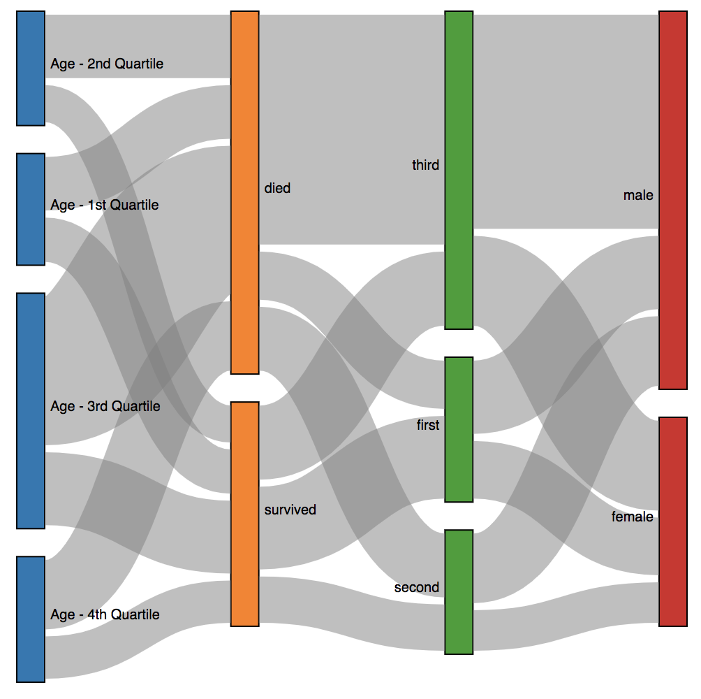

The challenge for this week is to create a Sankey diagram of Titanic shipwreck victims and survivors. I've constructed a directed acyclic graph of counts, located here.
The dataset contains nodes for age quartiles, cabin class, sex, and mortality. Your final Sankey diagram should using the following order: Age -> Mortality -> Cabin Class -> Sex
To construct your visualization, you will need to import the d3-sankey library. One easy way to do this is by adding this tag to your HTML header: <script src="https://unpkg.com/d3-sankey@0"></script>
This is an implementation challenge, not a design one. While it would be good practice to make an appealing and effective design, we will accept submissions that successfully construct a discernable chart. Here is one example that successfully displays a chart but does not necessarily practice the best design principles:

Submit your answer to CMS in the form of a .zip file containing your own HTML and a copy of the dataset. Submissions will be graded for completeness rather than quality, and the "best" ones will be highlighted in class.
You must turn in your final version before 11:59PM on Friday, April 17 in order to receive credit.